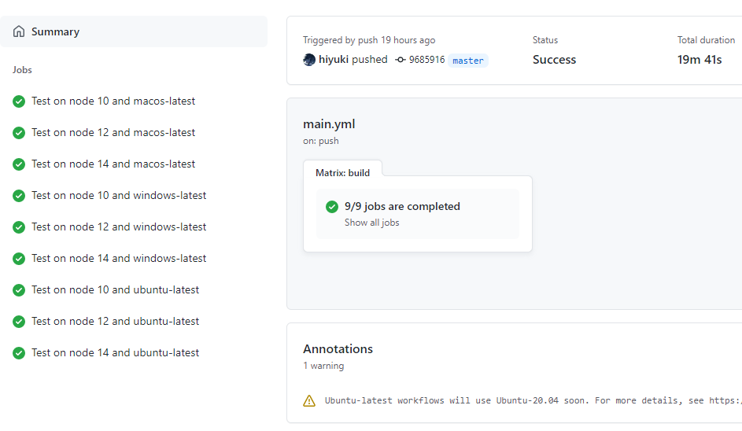

背景
最近将blog和mpx-template都从Travis迁移成GitHub-Actions了，两者都是持续集成工具。
为什么迁移原因也比较简单，Travis不够稳定，经常挂掉。而GitHub Actions有着更好的稳定性/性能，且整合集成得也更好。
此外Travis没有免费版提供给私有仓库使用，而GitHub在卖身给巨硬后明显财大气粗，宣布了私有仓库也免费使用了。
且GitHub Actions支持私有仓库。于是我的blog，本来是全开源的，终于可以藏起一些东西，只部署最终的结果。
使用
Actions刚出来时候就有了解过它，当时感觉用起来好像比Travis要麻烦很多。虽然已经淘汰了Travis，但不得不夸赞一下Travis配置的简洁，入门极其友好。如果和jenkins一样，说不定一开始我就不会对持续集成感兴趣。
但它比较有意思的一点是，提供了持续集成过程中各种“action”的复用的可能，并且在此基础上允许用户进行各种“action”的组合。
一直以来，CI/CD中的能力复用就是个有点尴尬的问题。比如要做lint-test-build-deploy这样一个流程，在一个项目中搭建完成后，要迁移到另一个项目，需要复制流水线的配置文件过去。
效果
本Blog就是一个很好的示例，源码仓库已经被隐藏起来了，每次提交都会通过GitHub Action同步部署到GitHub Pages服务和自维护的服务器上。
并不方便以本blog来举例讲解GitHub Action的使用，不过我这里还有一些开源项目上的应用示例：
Mpx
这个是滴滴出行网约车前端团队出品的应用层小程序框架，Github地址 。
一共配置了 测试/发包/文档 三种 GitHub Actions ，详情可见仓库里的 .github文件夹 。
这里讲讲它的发包和文档两块，看看 Github Actions 为一个开源项目带来了什么改变呢。
测试和发包
首先是部署发包，作为一个规范的开源项目，发包得是个标准的流程，不能随便乱发版本，不能发出有问题的包是个基本要求。
因此需要在发包前走一遍lint/unit，当然这个事情可以靠脚本达成，只要要求大家都通过脚本发包就可以了。但是我在编程这个事情上一直一来有一个思路，就是不要相信人，所有靠规章制度来约束人来操作的事情，都有出错的可能性，而且不人道，谁愿意被约束呢。
再加上大家环境不一，发包还需要权限，给每个人都加又太麻烦，只给一个人加这个人岂不是成发包工程师了？
因此提交代码后在云端做是最好的，工程师只需要关注编码并提交就好了。
代码提交后，先通过lint和unit，确认代码没有明显的低级错误。这个部分的配置见代码：https://github.com/didi/mpx/blob/master/.github/workflows/test.yml
核心就是指定个操作系统，安装依赖，执行相应的npm script。
然后发包，任何有这个仓库的github权限的同学都可以在本地执行 npm run release，会询问你打算发major/minor/patch类型的包来确定版本号，会确认你要发的包（mpx是一个mono repo，里面有很多包，每次发布只会发布有改动的包）和版本。
配置的内容在这里：https://github.com/didi/mpx/blob/master/.github/workflows/publish.yml
这个部分写得比较早，还是自己撸的发布相关的脚本/配置，好处是可控性极高，干了什么一目了然。坏处是居然需要自己写，而且后来人的维护也不方便，谁没事琢磨咋配置发包。如果现在再让我配这种东西，我一定会直接去GitHub action的市场里搜别人配置好的工具，直接使用。
文档
一个开源项目很重要的部分就是它的文档了，早期的文档是用gitbook编写的，然后自动部署到GitHub Pages上面。
现在重构成使用vuepress编写，不过用什么写不是重点，重点是要自动部署，最大程度降低文档的编写成本，让所有人都可以方便地帮助我们一起维护文档。
Github Action 在云端生成文档很简单，和上面的lint/unit没什么区别，但是自动部署这里就很舒服了：
1 | name: docs |
注意看 steps 的最后一项“Deploy”，是直接 uses peaceiris/actions-gh-pages@v3，通过with来传递一些参数，声明要部署的文件在哪里，部署用的personal token是什么，这个token是需要保密的，要在项目的 Settings - Secrets 里设置，设后没有人可以看，后面要修改也只能是直接填新的，看不到之前填的老的。
Mpx-template
这个是 Mpx 小程序框架 所配套的脚手架模板项目，Github地址 。
这个项目在对Github Action的应用上略微有一点特别。
模板需要关注的是，稳定可靠，不要生成出来的项目上来就无法运行。早期没有保障，人虽然很谨慎了，还是容易写出bug，这种东西一旦出bug，会导致新用户上来就遭遇失败，好心的可能跟你说一声，大部分可能直接就把这个框架拉黑了。
因此后来给项目补充了一些相关的自动化测试脚本，主要是测试在不同的场景下生成的对应项目是否都能做最基础的构建打包，打包后一些基础的文件是否有生成。
效果很好的，拦截了不少失误的场景。但是后来还是出过问题，因为它在Linux下没问题，但是在Windows下就出错了。
然后发现 GitHub 现在真是财大气粗，Travis 完全没法比较，Travis也可以选mac环境，Windows至少我当时没法选，而且会很慢。
直接看配置吧：
1 |
|
strategy下面的matrix，我指定了三种平台，三种node版本，GitHub Actions 在执行的时候，就会两两组合把九种场景全部验一遍。

以上就是我对公网开源项目在持续集成方面，将原有的 Travis 迁移为 Github Actions 的一些实践。希望对读者有一些启发，也欢迎交流。